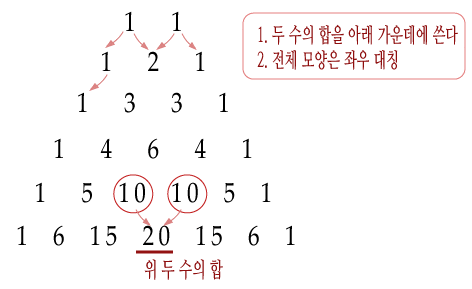
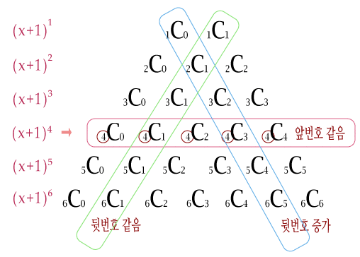
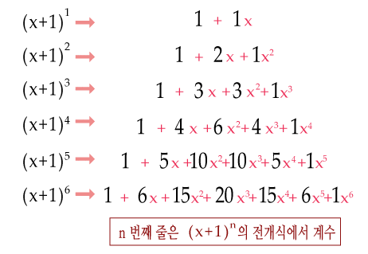

가장 윗줄에 1부터 N까지의 숫자가 한 개씩 적혀 있다. 그리고 둘째 줄부터 차례대로 파스칼
의 삼각형처럼 위의 두개를 더한 값이 저장되게 된다. 예를 들어 N이 4 이고 가장 윗 줄에 3
1 2 4 가 있다고 했을 때, 다음과 같은 삼각형이 그려진다.
3 1 2 4
4 3 6
7 9
16
N과 가장 밑에 있는 숫자가 주어져 있을 때 가장 윗줄에 있는 숫자를 구하는 프로그램을 작성하
시오. 단, 답이 여러가지가 나오는 경우에는 사전순으로 가장 앞에 오는 것을 출력하여야 한다.
▣ 입력설명
첫째 줄에 두개의 정수 N(1≤N≤10)과 F가 주어진다. N은 가장 윗줄에 있는 숫자의 개수를 의
미하며 F는 가장 밑에 줄에 있는 수로 1,000,000 이하이다.
▣ 출력설명
첫째 줄에 삼각형에서 가장 위에 들어갈 N개의 숫자를 빈 칸을 사이에 두고 출력한다. 답이 존재
하지 않는 경우는 입력으로 주어지지 않는다.
▣ 입력예제 1
4 16
▣ 출력예제 1
3 1 2 4
Tip

파스칼의 삼각형이다.
보면, 알겠지만 위 두 수를 더해서 아래층의 수가 된다.

이 그림을 보면, C(n, r) = C(n-1, r) + C(n-1, r-1)을 만족한다.
즉, n개의 수 중, r번째 있는 수가 더해지는 회수는 C(n-1, r)을 만족한다.

이 것은 (x+1)을 제곱하는 회수와도 관련이 있다. => 나중에 문제에 나올 수 있으므로 참고만 해둔다.